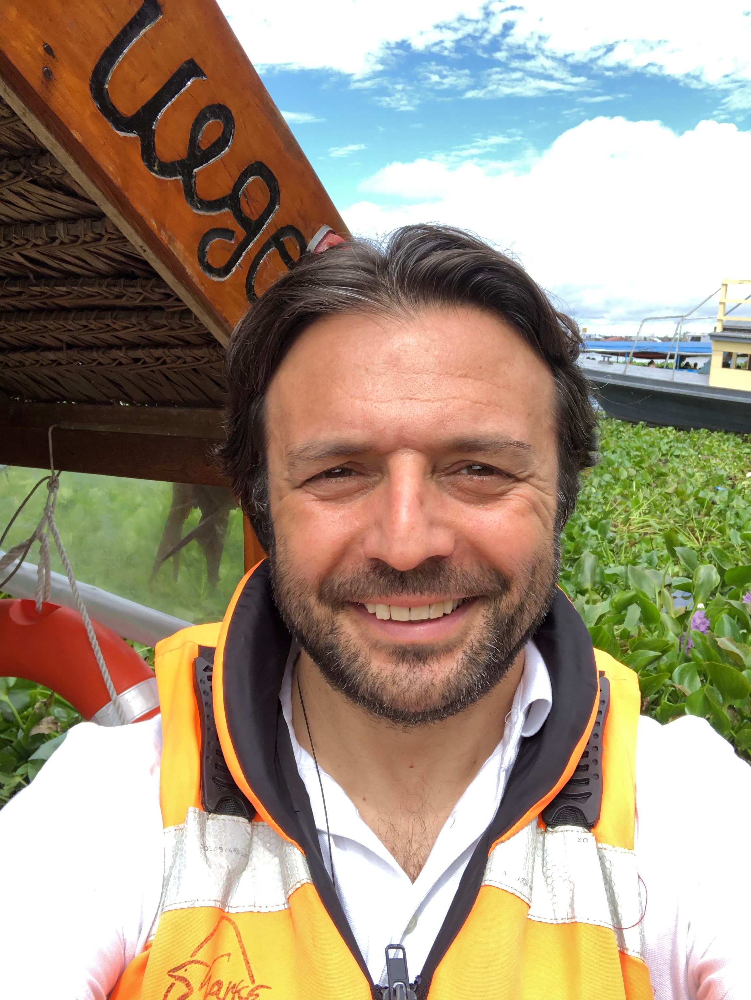

You may not have the words for it yet. Only a feeling. A pull toward something you cannot name, a sense that beneath all the chaos and the noise and the pain, something beautiful is waiting.
If you have ever felt that and wondered why, or what it means, or what to do, you are exactly where you need to be.
Welcome!
A human being is a resonance calibrator. Everything begins in the body and in what you think. The state of your nervous system and the quality of your thoughts shape how you feel. And how you feel shapes how you resonate. Your resonance is not simply something that happens to you. It is influenced by everything you carry, everything you practice, and everything you choose. This is where the journey begins.
Our Mission
@ Bliss exists to help people awaken to who they truly are, learn to consciously shape how they resonate, and remember their connection to one another and to the One.
Through awareness, practice, shared experience, and the wisdom carried across traditions, we seek to help each other live with greater coherence, compassion, joy, and universal unconditional love.
"We are not here to tell you what to believe. We are here to help each other remember what we already know by heart."
Our Vision
A world where we understand that how we resonate shapes how we live, and choose consciously to resonate with Light. Where the Golden Rule is not simply a teaching, but a lived reality. Not as law. Not as religion. But as the natural expression of a humanity that has remembered its Oneness.
A world where we know this not simply as an idea, but in our bodies, our thoughts, and the texture of our daily lives. Where synchronicity is recognized as the fingerprint of a deeper order. Where serendipity reminds us that life may be responding in ways we do not always understand. Where we learn not to force our way through life, but to become more coherent with it.
Where we no longer say, "May the Force be with you."
We say, "May we be with the Force."
Manifesto
The voice inside you is not who you truly are.
Thoughts arise. Fears arise. Judgments, memories, desires, and reactions arise. We experience them, but we are also able to observe them.
That simple realization creates a space between the voice and the one who is listening.
And that is where waking up begins.
Universal unconditional love is the ground of all being, not as an idea, but as a living frequency.
We are all expressions of the One.
When we resonate in Light, we remember what we know by heart: beneath every difference of name, belief, tradition, or nation, we are one.
We live by a simple and ancient law that wisdom traditions across the world have expressed in their own language:
Do not do to another what you would not have done to you.
Do not harm what does not harm you.
Do not destroy what does not threaten your life.
This golden thread is not a rule imposed from outside. It is what becomes natural when you truly know by heart that we are one.
We approach the world's religions, philosophies, and ancient wisdom traditions not as competing systems, but as different paths opening toward the same Truth.
Taoism, Kabbalah, Sufism, Christian Mysticism, Shamanism, and the Vedic traditions are each a door.
@ Bliss does not seek to replace any of them.
It exists to make visible the consciousness of Oneness and the universal compassion that lives at the heart of them all.
@ Bliss is a space of re-membering together, where children, parents, and all seekers can show up exactly as they are, without judgment, and allow heart, mind, body, and spirit to grow in greater awareness and coherence.
A space where intuition is welcomed, inner knowing is cultivated, and each person is encouraged to listen more deeply to what they already carry within.
In every practice, every conversation, every gathering, we return to the same question:
"What do I not know, or not remember, that could bring me, and us, a little closer to the One, to love, and to truth? To Bliss?"
"You are not at the mercy of how you resonate. You participate in shaping it, through every breath, every thought, every practice, every choice."
How It Works
The @ Bliss Path unfolds across six sequential stages, a progression, not a checklist. Each stage builds on the one before it.
If there is a voice inside you telling you what to do, that voice cannot be you.
Awakening begins when you learn to observe your thoughts, patterns, reactions, and inner voices instead of automatically identifying with them.
You begin to recognize what is happening within you before it takes the helm.
To know what you are not is the beginning of remembering what you are.
Awareness alone is not enough. The patterns we recognize in the mind also live in the body, the Soma.
Through Somatic Breathwork and other embodied practices, including mindful eating, mindful sleeping, and conscious movement, we learn to work with the nervous system and create conditions in which old patterns can begin to release and new patterns can emerge.
We begin to experience that changing our state can change how we think, feel, and respond.
Regulate → Release → Repattern → Integrate.
Explore Somatic Breathwork →Regulation creates space. Coherence brings us into alignment.
Through meditation, breath, focused attention, and heart-centered practices, we learn to bring the heart, mind, body, and emotions into greater coherence.
As the practice deepens, we also begin exploring the relationship between the brain, heart, nervous system, and pineal gland, and how different states of consciousness may shape the way we experience ourselves and the world around us.
Over time, coherence becomes more than something we practice.
It becomes a way we live.
As we become more coherent, we become more conscious of how we resonate.
Through meditation, visualization, conscious intention, and other contemplative practices, we explore the relationship between our inner state and the reality we experience.
We begin to recognize that how we resonate is shaped not only by meditation or intention, but by the way we live, including how we eat, sleep, move, consume, relate, think, and direct our attention.
The question gradually shifts from "How do I make this happen?" to "What do I need to become coherent with?"
We begin to consciously participate in how we resonate, not by trying to control life, but by becoming more aware of what we are bringing into it.
The Path is not an escape from the human experience. It is an invitation to experience it more fully.
Life offers us extraordinary beauty, tastes, sensations, relationships, creativity, laughter, love, and joy. We do not need to reject these things in order to awaken.
The practice is to discover whether we are enjoying them freely, or whether our desire for them has begun to control us.
When we are no longer possessed by the need to have, hold, or repeat an experience, we become free to appreciate it for what it is.
There is still responsibility, discipline, pain, and challenge. But the Path itself does not need to become another struggle.
Be present. Be free. And enjoy being human.
The @ Bliss Path is not about becoming someone new. It is about remembering who you truly are.
As the voices, patterns, fears, identities, and conditioning that once seemed to define you loosen their hold, something deeper becomes easier to recognize.
You begin to remember your connection to others, to life, and ultimately to the One.
And perhaps the Path does not end when you remember.
Perhaps it continues when you help another remember for themselves.
The Realizations
These are not ranks, achievements, or labels. They are realizations that move from something we understand intellectually to something we know by heart and embody in the way we live.
There is a voice inside you, and that voice is not who you truly are.
Much of the time, that voice is shaped by your experiences, fears, habits, expectations, conditioning, and emotional patterns.
Imagine yourself as the captain of a ship. You are still the captain, but the ship is often running on autopilot.
And that autopilot does not necessarily take you where you truly want to go.
Recognizing this is Truth.
There is another truth to discover:
It is possible to take back the helm.
We call the process of learning how to do this The @ Bliss Path.
Ability is reached when you know by heart that you have the ability to consciously participate in creating your life.
You begin to recognize that your inner state matters. You can change patterns, make conscious choices, set intentions, and change how you resonate.
Manifestation is no longer simply about wishing for something. It becomes an alignment of awareness, intention, emotion, belief, and action.
You move from simply reacting to life to consciously participating in it.
Oneness is reached when you know by heart that beneath our apparent differences, we all come from the same Source and are deeply interconnected.
From this understanding comes the Golden Rule:
Do not do to another what you would not have done to you.
Do not harm what does not harm you.
Do not destroy what does not threaten your life.
At this level, compassion is no longer simply something we are taught. It becomes the natural expression of knowing our oneness.
Unity is reached when you know by heart that the consciousness within you is not separate from the consciousness of the Creator, or from the consciousness within anyone else.
Those who lived before us, those who are alive today, and those who will be born in the future are expressions of the same greater consciousness.
There is the individual experience of being you.
And there is the greater consciousness of which you are a part.
To know this by heart is Unity.
Begin The Practice
The @ Bliss Path is free and open to everyone who genuinely wishes to learn it. But like every meaningful path, it asks something of you: time for yourself, practice, the completion of exercises along the way, and above all, a willingness to look inward with curiosity and honesty. There is no belief system you are required to adopt, but there is one idea you need to be ready to explore before beginning.
Before You Begin
Read the following statement carefully. Do not agree with it simply because you think you are supposed to. Take a moment and ask yourself whether you genuinely understand what it means, and whether you are ready to explore it through your own experience.
"I recognize that there is a voice inside me, and that this voice is not my authentic self. I recognize that, at times, and perhaps much of the time, it influences or directs the way I live.
If I am the captain of my ship, I can see that the ship is often running on autopilot, following patterns shaped by conditioning, habits, fears, and past experiences.
And I sincerely want to take back the helm."
If you can say this, you are ready to begin.
Welcome to The @ Bliss Path.
Founder

Ali C. Hantal is a serial entrepreneur, technologist, truth seeker, certified somatic breathwork practitioner, and Red Cross certified lifeguard, a soul walking the intersection of innovation and inner transformation.
He was born in Arnavutköy, then a quiet village along the Bosphorus shores of Istanbul. After high school, he earned his place in the Philosophy Department at Boğaziçi University, one of Türkiye's most prestigious institutions. He remembers his first philosophy class with extraordinary clarity. His professor, the late Arda Denkel, walked into the room and introduced the skeptical philosophy of René Descartes, and in doing so, dismantled the dogmatic, memorized certainties that had shaped everything Ali had been taught until that moment. A door opened in his young mind that has never closed since: the door to questioning every piece of knowledge he had once accepted as fact, and every piece he would encounter from that day forward.
He has said many times that beginning his journey as a philosophy student was one of the finest things that ever happened to him. He later transferred to Business Administration before earning his MBA at the University of Baltimore, and stepping fully into the world of entrepreneurship.
In his professional life, Ali is the Founder of XR Masters, Co-President of the Open AR Cloud Association, Adoption Officer for the GeoPose Standards Working Group at the Open Geospatial Consortium, and Leader of the Forum Labs Initiative at the Metaverse Standards Forum. He believes humanity stands at a genuine civilizational inflection point, not merely technological, but existential. The way we experience space, place, and one another is being fundamentally rewritten. His work is about ensuring that rewrite happens on open, shared foundations rather than inside walled gardens, so that human agency and free will can survive, and prosper. Through MyGeoVerse, he bridges the physical and digital worlds through AR Cloud technology and AI, enabling spatially aware agents with precise, real-world grounding.
He is also the Founder of @ Bliss Foundation, where he guides both one-on-one and group somatic breathwork sessions weekly, holding space for those finding their way back to themselves.
From his first year at university, he began reading across the full terrain of ancient and sacred texts: the Qur'an, the Bible, the Torah, the Zohar, the Bhagavad Gita, the Masnavi, the Tao Te Ching. He then moved into Tantra, Theology, Hermetic philosophy, Kabbalah, Christian Mysticism, Shamanism, and Sufism, and arrived, slowly and unmistakably, at a single realization: they are all pointing at the same thing. Beneath the different names, symbols, and languages, one simple and radical truth emerges: that we are all one, that this atomic realm of duality is not the whole story, and that at the heart of every great tradition lives the same golden thread: do not do to another what you would not have done to you; do not harm what does not harm you. This golden rule, ancient, universal, and quietly revolutionary, is not a moral instruction. It is a description of reality: when you truly know that we are one, harming another becomes as senseless as harming yourself. And flowing from that same source is what he understands as universal, unconditional compassion, not sentiment, but a fundamental orientation toward all living beings, born not from effort but from remembering.
Since childhood, Ali had wondered about the sixth sense, why school taught five and seemed incurious about the rest. The answer, when it finally came, was both simple and vast: every human being carries this sense. It does not come from the mind. It comes from the heart, from the true inner essence, and it can only be heard, as Osho said, in an utterly silent mind.
The spiritual path, as he has come to understand it, is not a pursuit. It is a remembering, a return to the true nature of Self that ends, always, at oneness, at the source. And the way there is not through more knowledge. It is through the heart. Through connecting to light, to chi, to the force, by learning to still the mind enough to hear what has always been speaking.
His path draws from Sufism, Shamanism, Taoism, Kabbalah, and Christian Mysticism, guided above all by the principle of wu wei: the art of not doing. Not passivity, but the profound intelligence of non-resistance. The surfer does not fight the ocean. They do not command the wave or demand it arrive on their schedule. They read it, feel it, and move with it, and in that surrender, something extraordinary becomes possible. Wu wei is that surrender applied to life itself: knowing when to act and when to yield, trusting the current beneath all things, letting the universe express itself through you rather than against you.
His daily practice, what he calls Daily Light Work, includes somatic breathwork, fitness, meditation, intention and manifestation work, shadow work, and mindful living, tending his inner field with the same care and precision he brings to his professional work.
Ali has meditated for over thirty years. But the real turning point came when he discovered somatic breathwork, and it changed everything. What had previously required deep ceremonial work to access became directly, repeatably, and profoundly available through the breath alone. He now facilitates guided somatic breathwork sessions weekly, and that consistency has made the practice a true cornerstone of his path and his life.
He believes humanity is at a crossroads unlike any in known history. Artificial General Intelligence, war, global authoritarianism, and the slow ecocide of planetary ecosystems are converging in ways that cannot be ignored. And yet, those with even a slightly open heart can sense that something numinous is waiting on the other side. He likes to say: may we be with the force rather than may the force be with you, because the force has always been here. It is we who drift from it.
He sees countless souls searching for a way back, to themselves, to their bodies, to the divine within, to the unity they have always been part of. He came to understand that somatic breathwork is one of the most profound, accessible, and deeply underestimated bridges available to humanity right now. That understanding is what led him to become a certified somatic breathwork practitioner and to found @ Bliss Foundation.
He is also co-founding the Prosper Foundation, built on the conviction that humanity will first survive, and then it will prosper.
Ali spends most of his time between St. Thomas, U.S. Virgin Islands, Türkiye and Washington, D.C.